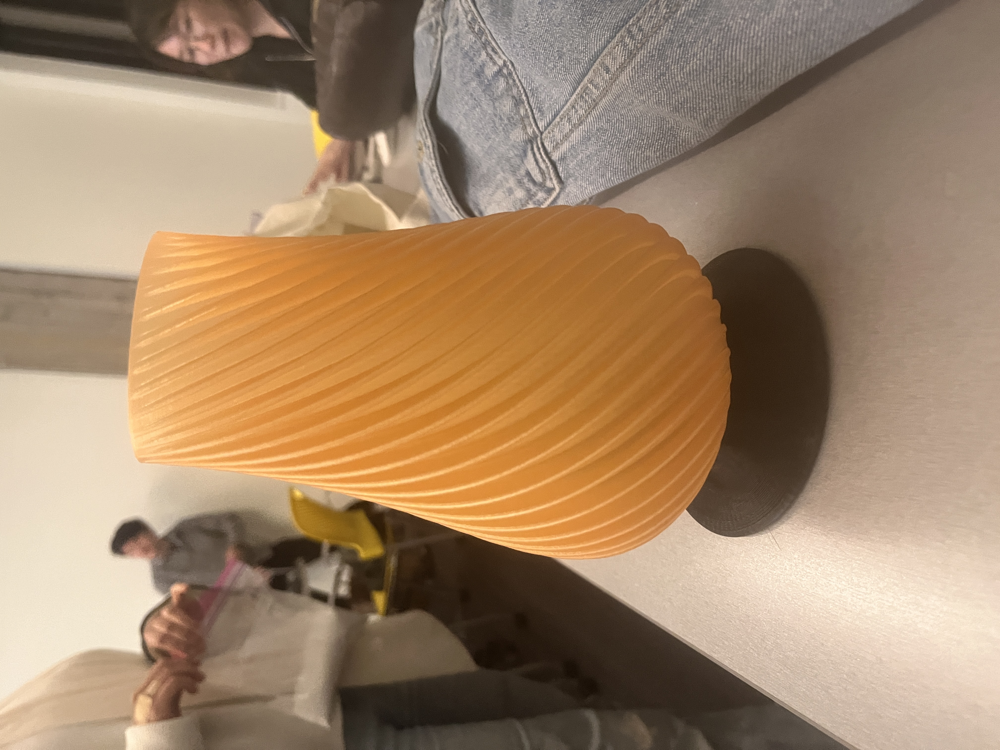
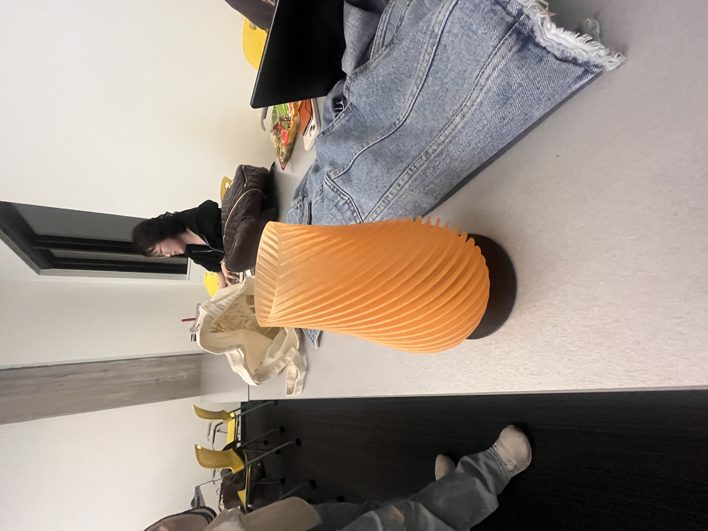

Here are the images of my final lamp created for the assignment:
 Description:
I used Rhino and Grasshopper to write the code for my lamp. Unfortunately, the size of the lamp shade came out wrong, but the design was quite nice. Additionally, my lamp is not fitting right, but it works, so it's a half win!
Google Drive link to additional files: Google Drive